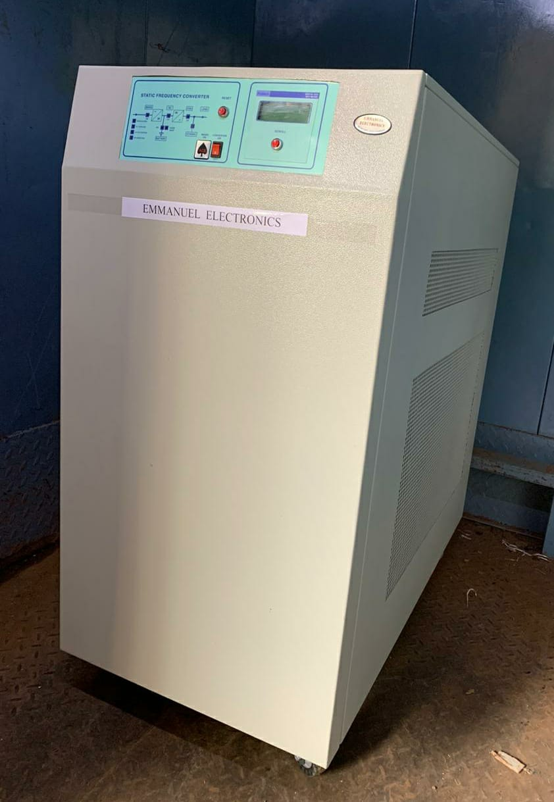
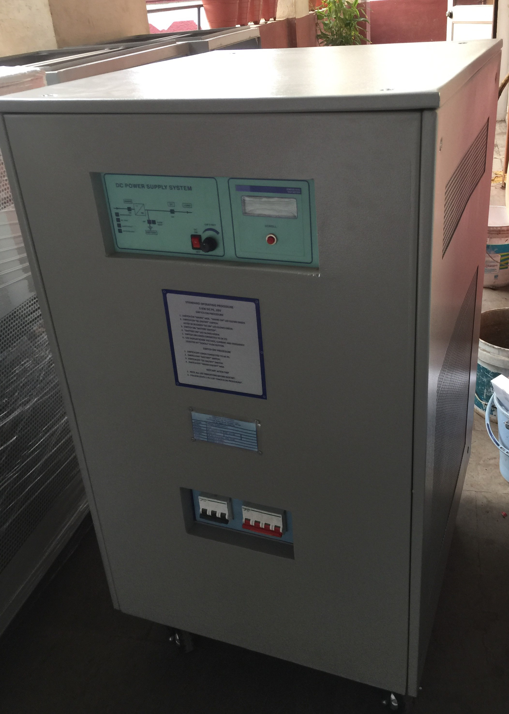
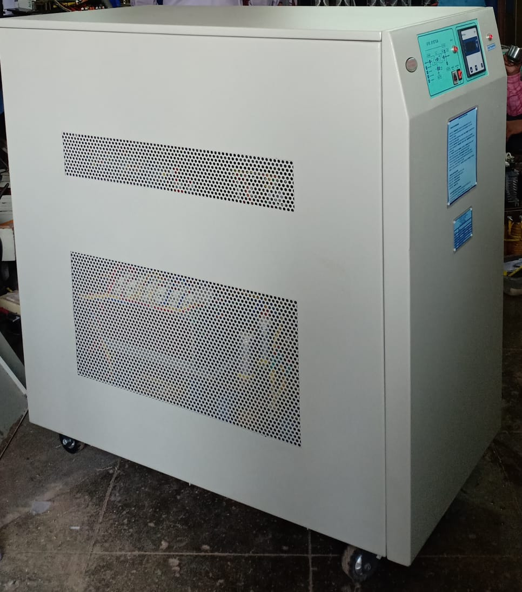
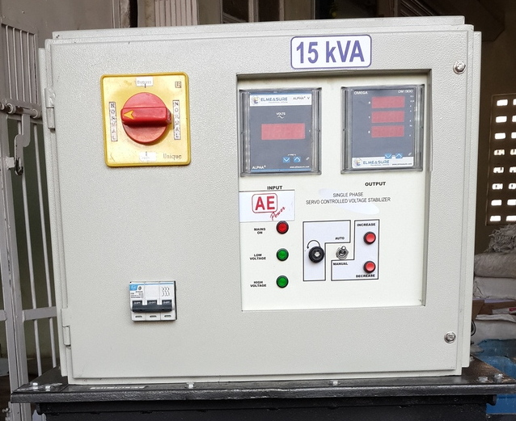

Our Products
Constant Voltage Transformers (CVTs)

Certain critical equipment (especially medical equipment) require Solid State Voltage (SSV) stabilizers with galvanic isolation between mains input and the equipment. Also, the equipment needs to be protected against spikes, voltage surges, glitches, noise, etc., which is not possible with conventional Servo Voltage Controlled (SVC) stabilizers. A special type of stabilizer, called the Constant Voltage Transformer (CVT) is used for such applications.
Frequency Converters
A frequency converter/changer is an electronic device that converts alternating current (AC) of one frequency to an alternating current of another frequency. The device may also change the voltage, if required.
Industrial Battery Chargers
A battery charger is a device used to put energy into a secondary cell or rechargeable battery by forcing an electric current through it. The charging protocol depends on the size and type of the battery being charged.
Power Inverters
A power inverter is an electronic device or circuitry that changes direct current (DC) to alternating current (AC). The input voltage, output voltage, frequency & overall power handling all depend on the design of the specific device or circuitry.
Servo Stabilizers
Servo Control Voltage Stabilizers are highly efficient voltage regulators that work equally well on any kind of load. It consists of a detector, a switching unit, a motorized auto-transformer & a cut-off circuit. In case of any deviation from the set voltage, the detector sends an error signal to the control circuit that, in turn, drives a motor to correct the voltage using the winding on the auto-transformer.